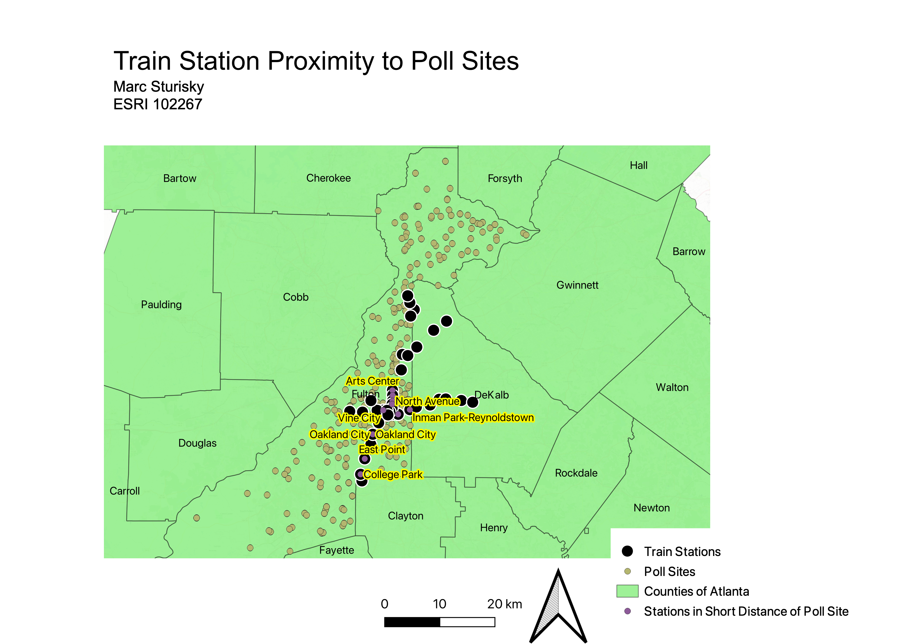
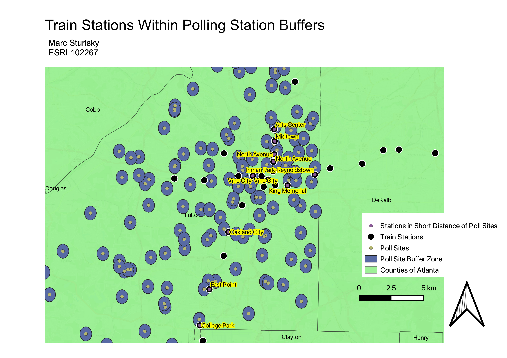

Homework 8
My real-life question that I attempt to answer through both geoprocessing and my maps below is "How close in proximity are Greater Atlanta Region train stations to Fulton County poll sites?"
The first map below demonstrates the entire Atlanta region:

As you can see, the poll sites are strictly in Fulton county while train stations extended out into border counties. The below map is focused on where these two pieces of data intersected.

I put a buffer zone around all of the poll sites to represent close commutes that people can take to get to those poll sites. If a train station is located within one of thsoe buffer zones, the train station point will have a purple dot in the center of the traditional black dot. I used both the buffer and the intersect geoprocessing tools to make this possible. I found this question an interesting one, using Atlanta as the example, because it is so important to be a voting citizen and should be made as easy as possible. I wanted to see if Atlanta train stations were close so that poll sites were easily both to and from them for someone that relies on public transportation.
All data used for this project:
Fulton County GIS Data